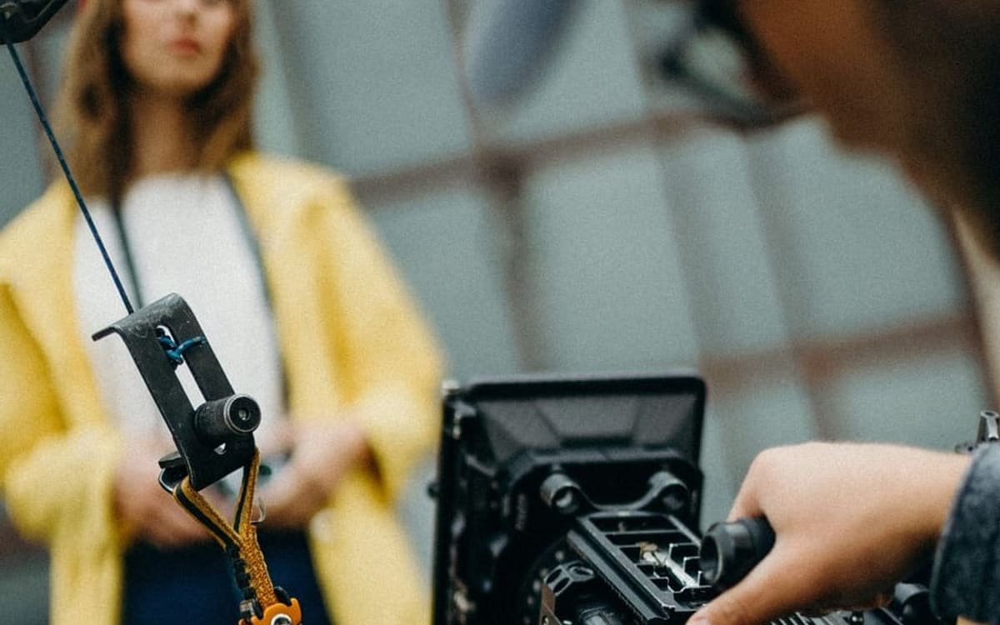

Qué encontramos
Oficio reconocido, marca invisible.
Años de trabajo en portones, barandales y automatización sostenidos sólo por el boca a boca.
Estudio creativo independiente · Miami
Estrategia, identidad, contenido, campañas y producción para alinear el valor de una marca con la forma en que se ve, se entiende y se experimenta.
Trabajo seleccionado
Milos Pro · Estrategia · Contenido · Campañas · Producción
Creamos Milos Pro desde cero: estrategia, identidad, sitio web, presencia local, contenido y campañas para conectar su experiencia en herrería y automatización con dos mercados en Miami —propietarios de vivienda y profesionales de la construcción.
Qué encontramos
Años de trabajo en portones, barandales y automatización sostenidos sólo por el boca a boca.
Qué construimos
Posicionamiento, identidad, sitio web y presencia local, con un mensaje distinto para cada audiencia.
Cómo se activó
Producción propia y pauta conectando la ficha local con quien ya está comparando presupuestos.
Qué empezó a ocurrir
Propietarios y constructores empezaron a llegar reconociendo el trabajo antes del primer contacto.
Capacidades
Lumma reúne pensamiento estratégico y ejecución creativa para construir marcas capaces de sostener una idea en cada punto de contacto.
Encontramos la oportunidad, definimos la dirección y convertimos complejidad en decisiones claras.
Construimos sistemas visuales y verbales con carácter, coherencia y capacidad de crecer.
Creamos ideas que pueden vivir más de una vez, en más de un formato y con un objetivo reconocible.
Llevamos las ideas a imagen, movimiento y sonido, desde una pieza breve hasta una producción de campaña.
Rara vez trabajan por separado. El proyecto decide cuánto peso toma cada una.
Nuestro punto de vista
Los negocios evolucionan. Ganan experiencia, mejoran lo que ofrecen y construyen una reputación. Pero su identidad, sus mensajes y su presencia no siempre avanzan al mismo ritmo.
Ahí aparece una distancia entre lo que la marca vale y lo que las personas alcanzan a percibir. Lumma trabaja sobre esa distancia: encuentra la idea, construye el sistema y le da una forma que pueda reconocerse.
Valor real Percepción Claridad
Cómo trabajamos
Halo es el marco de Lumma para alinear el valor real de una marca con la forma en que se percibe y se experimenta. La profundidad cambia según el proyecto; la lógica permanece.
Encontramos claridad y definimos qué debe resolver el proyecto.
Convertimos la estrategia en una idea y un sistema reconocible.
Llevamos el sistema al mundo a través de las piezas y experiencias correctas.
Sostenemos, aprendemos y ampliamos lo construido cuando el proyecto necesita continuidad.
Lumma Films
Desarrollamos y producimos historias para marcas: concepto, guion, dirección, fotografía, edición y postproducción trabajando para una misma idea.

El estudio
Lumma es un estudio creativo independiente fundado por Sonia Cot. Sonia lidera la visión, el desarrollo del negocio y las relaciones que permiten al estudio crecer.
Cada proyecto reúne al talento estratégico, creativo y técnico adecuado según lo que requiere la idea. Esta estructura mantiene las decisiones cerca, evita capas innecesarias y permite escalar el trabajo con especialistas seleccionados.
Cómo se arma cada proyecto
Ideas y procesos
Perspectivas sobre estrategia, identidad, campañas, contenido y las decisiones que convierten una idea en un sistema.
Estrategia
La mayoría de los proyectos no fallan por falta de ideas, sino por exceso de mensajes compitiendo entre sí. Antes de construir cualquier pieza, definimos qué queda fuera.
Leer la perspectivaCampañas
Contenido
En escritura.
Lumma Signal Scan
Revisamos las señales públicas de tu marca para identificar la brecha más importante entre el valor que tienes y la forma en que hoy se percibe.
Cada Signal Scan se prepara para una conversación en vivo. No es un reporte automático ni una estrategia gratuita: es el punto de partida para entender si existe una oportunidad que Lumma pueda ayudarte a desarrollar.
Mensaje
Qué se entiende en los primeros segundos, antes de cualquier explicación.
Identidad
Si lo que se ve corresponde con la experiencia real de trabajar contigo.
Contenido
Si lo publicado sostiene una idea o son piezas sueltas compitiendo.
Presencia
Cómo apareces en el momento en que alguien está decidiendo.
Lo que encontramos se presenta y se discute en vivo, contigo.
Preguntas frecuentes
Trabajamos en estrategia, identidad, campañas, sistemas de contenido y producción. Algunos proyectos necesitan el recorrido completo; otros comienzan con una necesidad específica. Antes de definir un alcance, revisamos qué debe resolver realmente el trabajo.
Todos comienzan con una etapa de claridad, pero no siempre tiene la misma profundidad o duración. Encendido se adapta al tipo de proyecto: una identidad, una campaña o un film no necesitan exactamente el mismo proceso.
Sí, cuando la base estratégica está suficientemente definida. Si detectamos que ejecutar una pieza aislada no resolverá el problema, lo diremos antes de proponer el proyecto.
Lumma trabaja con una dirección central y una red seleccionada de colaboradores. El equipo se configura según lo que cada proyecto necesita.
No. Estamos basados en Miami y podemos trabajar de forma remota con marcas en otros mercados. Las producciones presenciales se coordinan según ubicación y alcance.
Depende del alcance y de la disponibilidad del estudio. Después de la primera conversación confirmamos encaje, calendario y próximos pasos.
Empecemos
Cuéntanos qué estás construyendo, qué necesita cambiar y por qué este es el momento.
Miami, Florida · hello@lummacreative.com